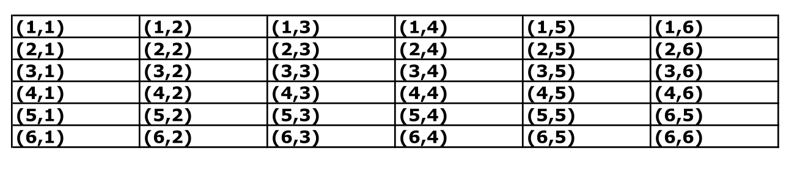
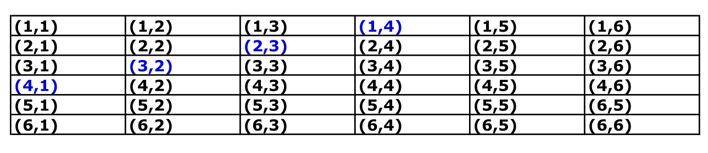
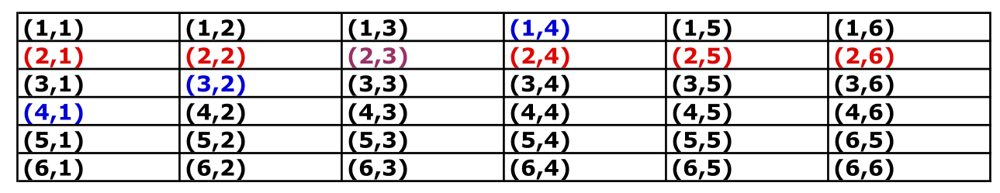
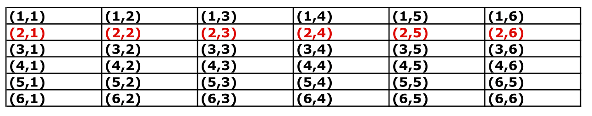

Chapter 3 Probability Axioms

Figure 3.1: ‘Is it clear to Everyone?’ by Enrico Chavez
In order to formalise probability as a branch of mathematics, Andrey Kolmogorov formulated a series of postulates. These axioms are crucial elements of the foundations on which all the mathematical theory of probability is built.
3.1 An Axiomatic Definition of Probability
Definition 3.1 (Probability Axioms) We define probability as a set function with values in \([0,1]\), which satisfies the following axioms:
- The probability of an event \(A\) in the Sample Space \(S\) is a non-negative real number \[\begin{equation} P(A) \geq 0, \text{ for every event } A \subset S \tag{3.1} \end{equation}\]
- The probability of the Sample Space is 1 \[\begin{equation} P(S)=1 \tag{3.2} \end{equation}\]
- If \(A_1,A_2,...\) is
- a sequence of mutually exclusive events, i.e.
\[A_{i}\cap A_{j}=\varnothing, \ \text{for} \ i\neq j,\ \text{and} \ i,j=1,2,...,\] - such that \(A = \bigcup_{i=1}^{\infty} A_i\), then:
3.2 Properties of \(P(\cdot)\)
These three axioms are the building block of other, more sophisticated statements. For instance:
Proof. Consider the sequence of mutually exclusive empty sets. \(A_1=A_2=A_3=....=\varnothing\). Then, by (3.3) in Axiom (ii) we have
\[P(\varnothing)= P\left( \bigcup_{i=1}^{\infty} A_i \right) = \sum_{i=1}^{\infty} P(A_i) =\sum_{i=1}^{\infty} P(\varnothing)\] which is true only if the right hand side is an infinite sum of zeros. Thus: \[P(\varnothing) = 0.\]Proof. Let \(A_{n+1}=A_{n+2}=....=\varnothing\), then \(\bigcup_{i=1}^{n} A_i = \bigcup_{i=1}^{\infty} A_i,\) and, from (3.3) (see Axiom (iii)) it follows that:
\[\begin{eqnarray} P\left( \bigcup_{i=1}^{n} A_i \right) &=& P\left( \bigcup_{i=1}^{\infty} A_i \right) = \sum_{i=1}^{\infty} P(A_i) = \sum_{i=1}^{n} P(A_i) + \underbrace{\sum_{i=n+1}^{\infty} P(A_i)}_{\equiv 0}. \end{eqnarray}\]Proof. By definition, \(A\) and its complement \(A^c\) are such that:
- \(A \cup A^c = S\) and
- \(A \cap A^c = \varnothing\)
Hence, from the addition law 3.2: \[P( S ) = P\left(A \cup A^c \right) =P(A) + P\left(A^c \right).\]
Finally, by Axiom (ii), \(P(S)=1\), and. \[1 = P(A) + P\left(A^c \right).\] The result follows.Theorem 3.4 (The Monotonicity Rule) For any two events \(A\) and \(B\), such that \(B \subset A\), we have:
\[P(A) \geq P(B).\]
Figure 3.2: The areas of \(B\subset A\)
Proof. Consider that \(A\cup B = A \cup (A^c \cap B)\), and \(A\cap(A^c \cap B) = \phi\). Now remember that \(A^c \cap B = B -(A \cap B)\), so, \[\begin{eqnarray} P(A\cup B) &=& P(A) + P(A^c \cap B) \\ &=& P(A) + P(B) - P(A\cap B). \end{eqnarray}\]
To illustrate this property, consider for instance \(n=2\). Then we have: \[ P(A_1 \cup A_2 ) = P(A_1) + P(A_2) - P(A_1 \cap A_2) \leq P(A_1) + P(A_2) \] since \(P(A_1 \cap A_2) \geq 0\) by definition.
3.3 Examples and Illustrations
3.3.1 Flipping coins
Example 3.1 (Flipping Coins) If we flip a balanced coin twice, what is the probability of getting at least one head?
The sample space is: \(S = \{HH, HT, TH, TT\}\)
Since the coin is balanced, these outcomes are equally likely and we assign to each sample point probability \(= 1/4\)
Let \(A\) denote the event obtaining at least one Head, i.e. \(H = \{HH, HT, TH\}\)
\[\begin{align} Pr(A) &= Pr( \{HH \cup HT \cup TH\}) = Pr(\{HH\}) + Pr(\{HT\}) + Pr(\{TH\})\\ &= \frac{1}{4} +\frac{1}{4}+\frac{1}{4} = \frac{3}{4} \end{align}\]3.3.2 Detecting shoppers
Example 3.2 (Detecting Shoppers) Shopper TRK is an electronic device designed to count the number of shoppers entering a shopping centre. When two shoppers enter the shopping centre together, one walking in front of the other, the following probabilities apply:
- There is a 0.98 probability that the first shopper is detected.
- There is a 0.94 probability that the second shopper is detected.
- There is a 0.93 probability that both shoppers are detected.
What is the probability that the device will detect at least one of the two shoppers entering? Let us define the events \(D\) (shopper is detected) and \(U\) (shopper is undetected). Then, the Sample Space is \(S=\{ DD, DU, UD, UU\}\)
We can futher proceed to interpret the probabilities that were previously mentioned:
- \(Pr(DD \cup DU) = 0.98\)
- \(Pr(DD \cup UD) = 0.94\)
- \(Pr(DD) = 0.93\)
\[\begin{align} Pr(DD \cup UD \cup DU) &= Pr(\{DD \cup UD\} \cup \{DD \cup DU\})\\ &= Pr(\{DD \cup UD\}) + Pr(\{DD \cup DU\}) - Pr(\{DD \cup UD\} \cap \{DD \cup DU\}) \end{align}\]
Let’s study the event \(\{DD \cup UD\} \cap \{DD \cup DU\}\) to compute its probability.
As we have seen in Chapter 2, the union is distributive with respect to the intersection operations, hence:
\[(DD \cup UD) \cap (DD \cup DU) = DD \cup (UD \cap DU) =DD \cup \varnothing = DD\]
This can also be assessed graphically, as illustrated on figure 3.3, where the intersection between events \((DD \cup UD)\) and \((DD \cup DU)\) is clearly given by \(DD\).
So, the desired probability is: \[\begin{align} Pr(DD \cup UD \cup DU) &= Pr(\{DD \cup UD\}) + Pr(\{DD \cup DU\}) - Pr(DD) \\ &= 0.98 + 0.94-0.93 \\ &= 0.99 \end{align}\]
Figure 3.3: Schematic illustration of the sets in Exercise 3.2
3.3.3 De Morgan’s Law
Example 3.3 (Application of De Morgan’s laws) Given \(P(A\cup B)=0.7\) and \(P(A\cup {B}^c) = 0.9\), find \(P(A)\)
By De Morgan’s law,
\[P(A^c \cap B^c) = P((A\cup B )^c) = 1 - P(A\cup B) = 1 - 0.7 = 0.3\]
and similarly:
\[P(A^c \cap B) = 1 - P(A \cup B^c) = 1- 0.9 = 0.1.\]
Thus, \[P(A^c)=P(A^c \cap B^c )+P(A^c \cap B)= 0.3+ 0.1= 0.4,\] so: \[P(A)=1 - 0.4= 0.6.\]3.3.4 Probability, union, and complement
Example 3.4 John is taking two books along on his holiday vacation. With probability 0.5, he will like the first book; with probability 0.4, he will like the second book; and with probability 0.3, he will like both books.
What is the probability that he likes neither book?
Let \(A_i\) be the event that John likes book \(i\), for \(i=1,2\). Then the probability that he likes at least one book is: \[\begin{eqnarray} P\left(\bigcup_{i=1}^2 A_i\right) &=& P(A_1 \cup A_2) = P(A_1) + P(A_2) - P(A_1 \cap A_2)\\ &=& 0.5 + 0.4 -0.3 =0.6. \end{eqnarray}\] Because the event the John likes neither books is the complement of the event that he likes at least one of them (namely \(A_1 \cup A_2\)), we have \[P(A^{c}_1 \cap A^{c}_2 ) = P((A_1 \cup A_2)^c) = 1- P (A_1 \cup A_2) = 0.4.\]3.4 Conditional probability
](img/fun/probconditionnelle2.png)
Figure 3.4: ‘Probability of a walk’ from the Cartoon Guide to Statistics
As a measure of uncertainty, the probability depends on the information available. The notion of Conditional Probability captures the fact that in some scenarios, the probability of an event will change according to the realisation of another event.
Let us illustrate this with an example:

Now let us define the event \(A\) = getting \(5\), or equivalently \(A=\{ 5\}\). What is \(P(A)\), i.e. the probability of getting \(5\)?. In the table above, we can identify and highlight the scenarios where the sum of both dice is 5:

Since both dice are fair, we get 36 mutually exclusive scenarios with equal probability \({1}/{36}\), i.e. \[Pr(i,j) = \frac{1}{36}, \quad \text{for} \quad i,j=1,..,6\] Hence, to compute the probability of \(A\), we can sum their probability of the highlighted events: \[\begin{eqnarray} P(5) &=& Pr\left\{ (1,4) \cup (2,3) \cup (3,2) \cup (4,1) \right\} \\ &=& Pr\left\{ (1,4) \right\} + Pr\left\{ (2,3) \right\} + Pr\left\{(3,2) \right\} + Pr\left\{ (4,1) \right\} \\ &=& {1} /{36} + {1} /{36} + {1} /{36} + {1} /{36} \\ &=& {4} /{36} \\ &=& 1 /{9}. \end{eqnarray}\]
Now, suppose that, instead of throwing both dice simultaneously, we throw them one at a time. In this scenario, imagine that our first die yields a 2.
What is the probability of getting 5 given that we have gotten 2 in the first throw?
To answer this question, let us highlight the outcomes where the first die yields a 2 in the table of events.

As we see in the table, the only scenario where we have \(A\) is when we obtain \(3\) in the second throw. Since the event “obtaining a 3” for one of the dice, has a probability\(=1/6\):
\(\text{Pr}\{\text{getting 5 given 2 in the first throw}\}= \text{Pr}\{\text{getting 3 in the second throw}\}=1/6.\)

Also, sometimes the probability can change drastically. For example, suppose that in our example we have 6 in the first throw. Then, the probability of observing 5 in two draws is zero(!)
Let us come back to the example of the two dice and assess whether the formula applies. Let us define the event \(B\) as “obtaining a 2 on the first throw,” i.e.
The probability of this event can be computed as follows:
\[\begin{eqnarray} P(B) &=& Pr\left\{ (2,1) \cup (2,2) \cup (2,3) \cup (2,4) \cup (2,5) \cup (2,6) \right\} \\ &=& Pr(2,1) + Pr(2,2) + Pr(2,3) + Pr(2,4) + Pr(2,5) + Pr(2,6) \\ &=& 6/36 =1/6 \end{eqnarray}\]
Let us now focus on the event \(A \cap B\), i.e. “sum of both dice = 5” and "getting a 2 on the first throw**. As we have seen in the previous tables, this event arises only when the second die yields a 3, i.e.
Hence, \(P(A \cap B) = Pr (2,3) = 1/36\) and thus: \[ P(A\vert B) = \frac{P(A \cap B)}{P(B)} = \frac{1/36}{1/6} = \frac{1}{6}. \]
3.5 Independence
Clearly, if \(P(A\vert B) \neq P(A)\), then \(A\) and \(B\) are .
3.5.1 Another characterisation
Two events \(A\) and \(B\) are independent if \[P(A \vert B) = {P(A)},\] now by definition of conditional probability we know that \[P(A \vert B) = \frac{P(A \cap B)}{P(B)},\] so we have \[P(A) = \frac{P(A \cap B)}{P(B)},\] and rearranging the terms, we find that two events are independent iif \[P(A\cap B) = P(A) P(B).\]
Example 3.6 A coin is tossed three times and the eight possible outcomes \[S = \{HHH, HHT, HTH, THH, HTT, THT, TTH, TTT\}\] are assumed to be equally likely owith probability \(1/8\).
Define:
- \(A\): an \(H\) occurs on each of the first two tosses
- \(B\): \(T\) occurs on the third toss
- \(D\): Two \(T\)s occur in three tosses
- Q1: Are \(A\) and \(B\) independent?
- Q2: Are \(B\) and \(D\) independent?
We have:
| Event | Probability |
|---|---|
| \(A = \{ HHH, HHT\}\) | \(Pr(A)=\frac{2}{8}=\frac{1}{4}\) |
| \(B = \{HHT, HTT, THT, TTT\}\) | \(Pr(B)=\frac{4}{8}=\frac{1}{2}\) |
| \(D = \{HHT, THT, TTH\}\) | \(Pr(D)=\frac{3}{8}\) |
| \(A\cap B = \{ HHT\}\) | \(Pr(A\cap B)=\frac{1}{8}\) |
| \(B\cap D = \{ HTT, THT\}\) | \(Pr(B\cap D)=\frac{2}{8}=\frac{1}{4}\) |
Now, if we compute the probabilities of the products and compare with the definition of independence:
- \(Pr(A) \times Pr(B) = \frac{1}{4}\times \frac{1}{2}= \frac{1}{8} = Pr(A\cap B)\), hence \(A\) and \(C\) are independent.
- \(Pr(B) \times Pr(D) = \frac{1}{2}\times \frac{3}{8}= \frac{3}{16} \neq \frac{1}{4} = Pr(B\cap D)\), hence \(B\) and \(D\) are dependent.
3.6 Theorem I: The Theorem of Total Probabilities
Corollary 3.1 Let \(B\) satisfy \(0<P(B)<1\); then for every event \(A\):
\[\begin{equation*} P(A)=P(A\vert B)P(B)+P(A\vert B^c) P(B^c) \end{equation*}\]3.7 Theorem II: Bayes’ Theorem
Theorem I can be applied to derive the well-celebrated Bayes’ Theorem.
Example 3.7 Let us consider a special case, where we have only two events \(A\) and \(B\).
From the definition of conditional probability: \[P(A|B) = \frac{P(A\cap B)}{P(B)} \qquad P(B|A) = \frac{P(A\cap B)}{P(A)}.\] This can be written as: \[P(A\cap B) = P(A|B) \times P(B) \qquad P(B\cap A) = P(B|A) \times P(A),\] which entails: \[P(A|B) \times P(B) = P(B|A) \times P(A),\] which is the expression of Bayes’ Theorem.
… so thanks to Bayes’ Theorem we can reverse the role of \(A\vert B\) and \(B \vert A\).3.7.1 Guessing in a multiple choice exam
Example 3.8 (Example 3c in Ross (2014)) In answering a question on a multiple-choice test, a student either knows the answer or guesses. Let p be the probability that the student knows the answer and 1 − p be the probability that the student guesses. Assume that a student who guesses at the answer will be correct with probability 1/m, where m is the number of multiple choice alternatives.
What is the conditional probability that a student knew the answer to a question given that he or she answered it correctly?
Solution Let C and K denote, respectively, the events that the student answers the question correctly and the event that he or she actually knows the answer. Now,
\[\begin{align*} P(K|C ) & = \frac{P(KC)}{P(C)} \\ &= \frac{P(C|K)P(K)}{P(C|K )P(K) + P(C|Kc)P(Kc)} \\ &= \frac{p}{p + (1/m)(1 − p)} \\ &= \frac{mp}{1 + (m − 1)p} \end{align*}\]
For example, if \(m = 5\), \(p = 12\) , then the probability that the student knew the answer to a question he or she answered correctly is 5/6 .3.7.2 Rent car maintenance
Example 3.9 - 60% from AVIS - 40% from Mobility
Now consider that
- 9% of the cars from AVIS need a tune-up
- 20% of the cars from Mobility need a tune-up
If a car delivered to the consulting firm needs a tune-up, what is the probability that the care came from AVIS?
Let us set: \(A:=\{\text{car rented from AVIS}\}\) and \(B:=\{\text{car needs a tune-up}\}\). We know \(P(B\vert A)\) and we look for \(P(A\vert B)\) \(\Rightarrow\) Bayes’ theorem!!
\[P(A) =0.6 \qquad P(B|A) =0.09 \qquad P(B|A^c) =0.2\]
\[\begin{align} P(B)&=P((B\cap A) \cup (B\cap A^c))\\ &=P(B\cap A)+P(B\cap A^c)\\ &=P(B|A)\times P(A)+P(B|A^c)P(A^c)\\ &=0.09\times 0.6 + 0.2 \times 0.4 \\ &=0.134 \end{align}\]
\[P(A|B) = \frac{P(A)}{P(B)}\times P(B|A) = \frac{0.6}{0.134}0.09 = 0.402985\]